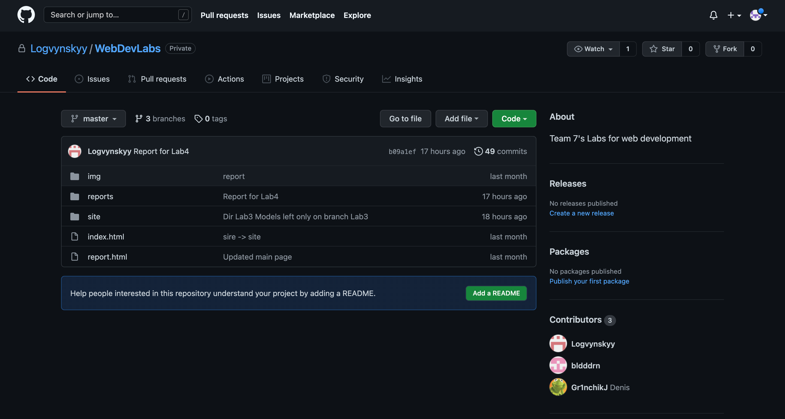

ЛАБОРАТОРНА РОБОТА №3
Тема: БЛОЧНА ВЕРСТКА HTML-ДОКУМЕНТУ ЗА МАКЕТОМ.
Мета: придбати практичні навички роботи верстки сторінок засобами CSS,
верстки на основі плаваючих елементів, з’ясувати переваги та недоліки типів макетів веб-сторінок
Місце розташування звіту та сайту

Git Hub